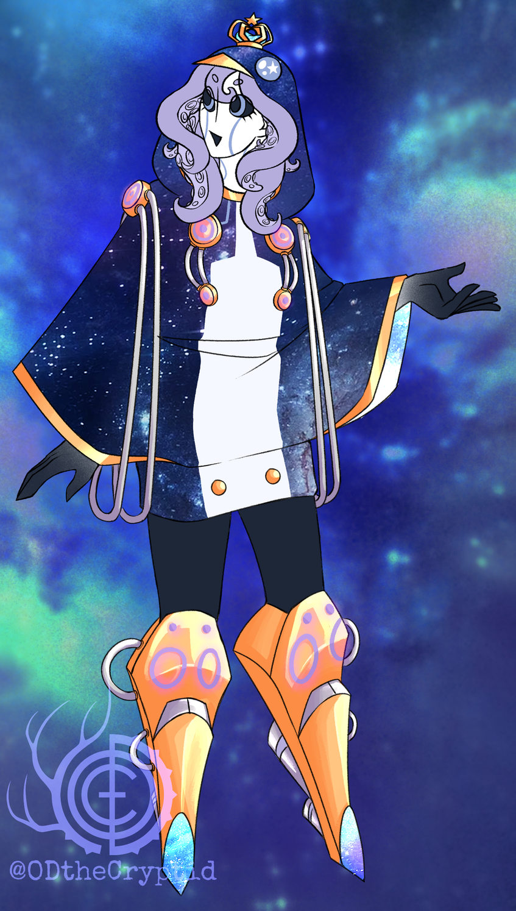

wait, who's pengy?
that's me!
think of "princess pengy" as a visitor from outer space, touching down to occasionally deliver some curious bit or bob before returning to her home planet. I do all sorts of things scattered across various places on the internet, such as:
and while I don't do much of these anymore, I did do them at one point, and so you can also find:
purpose of this blog
kinda just whatever I want, to be honest! these days I'm mostly writing sporadic review-type posts as part of my "strange gaming diaries" series, with occasional introspective pieces about my own creative projects and other written wanderings.
about pengy (the character)

"princess pengy" is also the name of a weird alien girl that I've taken on as my online persona of choice! I like to think of her as something of an alter ego, simultaneously an element of myself while maintaining her own background, quirks, and overall vibes. she was designed by my bestie Lore Evermore, who also drew all of her official reference materials and basically all of the art I used for this blog!
pengy is a shapeshifting spacething in the general ballpark of a girl. she regards humanity as a fun role to perform and a costume to put on. she is to planet earth as a bright-eyed stargazer is to the constellations across the sky. the big chunky rocket boots might be seen to some as "completely unnecessary" and "a waste of space-age technology" on account of the fact that she already has the psionic prowess necessary to telekinetically fly, but she insists that the dramatic effect is very important.
hey how'd you do all this?
I used zonelets! it's a super easy to set up series of templates, and the website you get it from has plenty of guides on how to make it work. I wanted a barebones no-frills easy point of entry into blogging, and zonelets provides that super well! would absolutely recommend for any readers who may be intimidated by the prospect of making your own website.
after a little while, I expanded on zonelets by implementing the tagging system (and a bunch of other behind-the-scenes stuff) from zonelots!